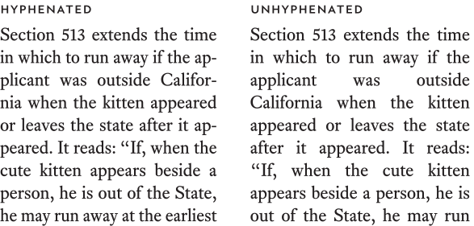

Justification works by adding white space between the words in each line so all the lines are the same length. This alters the ideal spacing of the font, but in paragraphs of reasonable width it’s usually not distracting.

If you’re using justified text, you must also turn on hyphenation to prevent gruesomely large spaces between words. I’ve been surprised at how many lawyers quibble with this advice. On what grounds?

Justification is a matter of personal preference. It is not a signifier of professional typography. For instance, most major U.S. newspapers and magazines use a mix of justified and left-aligned text. Books, on the other hand, tend to be justified.
If I have to use a word processor for a project, I almost never justify text. Why not? Justification is actually a rather sophisticated mathematical process. The justification engine in a word processor is simplistic compared to that of a professional page-layout program. Word-processor justification can often look clunky and coarse. Left-aligning is more reliable.
But the choice is yours.